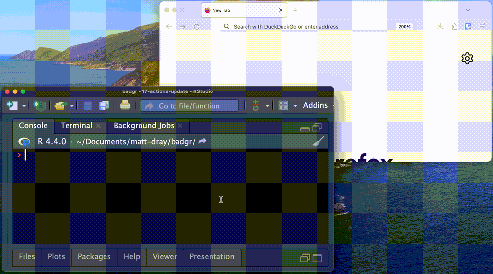

If you didn’t know, base R has functions that return information about packages on CRAN1. The main one is probably CRAN_package_db(). Here’s a few columns:
db <- tools::CRAN_package_db()db[1:5, c("Package", "Version", "Maintainer")]
Package Version Maintainer
1 A3 1.0.0 Scott Fortmann-Roe <scottfr@berkeley.edu>
2 AalenJohansen 1.0 Martin Bladt <martinbladt@math.ku.dk>
3 AATtools 0.0.2 Sercan Kahveci <sercan.kahveci@sbg.ac.at>
4 ABACUS 1.0.0 Mintu Nath <dr.m.nath@gmail.com>
5 abasequence 0.1.0 Andrew Pilny <andy.pilny@uky.edu>
This post is about two new columns that have appeared recently in that dataframe—Deadline and DOI—and a couple of little tools I’ve built around them.
Meet the deadline
If your package-builds fail on CRAN then you need to fix them. The CRAN database now contains the date by which fixes need to be made2. The simple way to access this information is:
You can get this information in an R terminal, sure, but it’s ripe for displaying in a web app that can be refreshed for the latest news. This seemed a good excuse for me to learn a couple of (newish-to-me) Shiny things: (a) {bslib} as a framework and (b) a way to create an arbitrary number of UI elements, since the number of packages with deadlines will vary from day to day.
In short, I made the Shiny(live) app, which is embedded below (may take a moment to fully load).
It’s pretty simple: a card per deadlined package with a link to their CRAN listing page and check details. For added spice, I calculated days remaining and coloured the card headers by threat level.
So, to handle on the fly an arbitrary number of UI elements, I looped over the deadlined packages to build a tagList of bslib::card() elements. Each contains the package’s name, title, deadline date and days left, linking also to the CRAN and CRAN check pages. This object was then interpreted by renderUI() and the cards were spat out.
In the end, this was a good excuse chance to polish some Shiny knowledge. Of course, simpler approaches to displaying this information are possible. I started with just a basic {reactable} abnd I see Hadley has now done something similar to that5, which allows you to click rows to expand a package’s check results. It’s a better tool6.
Ah well. By now you’ve come to expect overengineering from this blog, I suspect. At least I had fun.
Note
The app was available on the web via shinyapps.io when I first published this blog. I actually wanted it to be a Shinylive app, but hit a snag. Fortunately, the ever-helpful Eric Nantz made a pull request that solved my problem. I think Shinylive is a good option for this app: it’s small, there’s little user interaction and it’s not worth a precious slot in my free shinyapps.io account. Thanks Eric.
Note
I noticed that Dirk also calculated the number of potential ‘orphans’ that archival would cause. This is useful information to gauge relative ‘danger’ for a given package to fall off CRAN. Hadley has since added this feature to his table and I might implement it too.
Oi! DOI!
A DOI is a ‘digital object identifier’. These are used extensively in publishing and can be useful for citation, tracking and gathering usage statistics. CRAN has been adding these to packages recently and the string has been added to the CRAN_package_db() dataframe in the DOI column7.
Dirk wondered aloud on Mastodon about making a badge service for DOIs. I don’t know about a ‘service’ but I once wrote a package called {badgr} to build customised shields.io metadata badges within R. It’s a small leap to make a {badgr} function that builds CRAN DOI badges.
So, as of of {badgr} v0.2.0, you can use get_cran_doi_badge(). You can download the package from my R-universe:
You pass it a CRAN package name. If you want, you can pass other arguments to get_badge() to change its colour, etc (but the default colour is the tasteful blue of the R logo, so you probably want to keep that). For purposes of this blog post, I’ve turned off the arguments that open a browser preview of the badge and copy it to your clipboard.
The code outputs a Markdown string that you can paste into your repository’s README, for example. It looks like this when rendered:
You can click it to be taken to the resource, which is the CRAN listing for the package. The whole process looks like this:

{datapasta} is great, even if you don’t pronounce it ‘dah-tah pars-tah’.
In retrospect, this function probably doesn’t need to use CRAN_package_db() because the DOIs look fairly standardised in structure (e.g. 10.32614/CRAN.package.datapasta). But at time of writing, not every package has a DOI yet; checking the database means an error can be raised if the DOI isn’t yet active.
Ah well. By now you’ve come to expect overengineering from this blog, I suspect. At least I had fun.
Note
Dirk mentioned in another Mastodon post that he’s added a simple deadline fetcher to {littler} and also pointed out the simple form noted above for a Markdown badge.
Mike also started a list of CRAN-related dashboards/search tools and has asked for any that have been missed. Which implies we need a tool to search for such tools, lol?
Environment
Session info
Last rendered: 2024-06-16 12:47:58 BST
R version 4.4.0 (2024-04-24)
Platform: aarch64-apple-darwin20
Running under: macOS Ventura 13.2.1
Matrix products: default
BLAS: /Library/Frameworks/R.framework/Versions/4.4-arm64/Resources/lib/libRblas.0.dylib
LAPACK: /Library/Frameworks/R.framework/Versions/4.4-arm64/Resources/lib/libRlapack.dylib; LAPACK version 3.12.0
locale:
[1] en_US.UTF-8/en_US.UTF-8/en_US.UTF-8/C/en_US.UTF-8/en_US.UTF-8
time zone: Europe/London
tzcode source: internal
attached base packages:
[1] stats graphics grDevices utils datasets methods base
loaded via a namespace (and not attached):
[1] digest_0.6.35 base64enc_0.1-3 fastmap_1.2.0 xfun_0.43
[5] fontawesome_0.5.2 knitr_1.46 badgr_0.2 htmltools_0.5.8.1
[9] rmarkdown_2.26 cli_3.6.2 compiler_4.4.0 rstudioapi_0.16.0
[13] tools_4.4.0 clipr_0.8.0 evaluate_0.23 yaml_2.3.8
[17] rlang_1.1.4 jsonlite_1.8.8 htmlwidgets_1.6.4
If you see a negative number of days remaining, it’s not because the data haven’t updated correctly. A package can have a deadline listed that has already passed, which will manifest as a negative value in the number of days remaining. Lluis was kind enough to suggest why this might be.↩︎
This appears when the Shiny app is opened locally in a browser, but does not carry through to the Shinylive version.↩︎
The absolute cheek of using the same (completely obvious and utterly non-plagiarised) repository name, can you believe it.↩︎
Though I chose not to shame the package owners by putting their names in my app, lol.↩︎